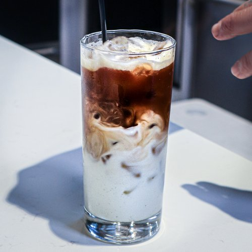

How to make Bac xiu
The recipe is from Chef Tu David Phu

Ingredients
- 4 oz., hot water
- 2 tablespoons, Mr. Espresso
Neopolitan Blend [#8 Grind]
- 4 oz., whole milk
- 3 tablespoons, condensed milk
Equipment
- 10 oz. Glass
- 1 cup Ice
- Mixing spoons
- Measuring spoons
- Vietnamese Phin Filter
- Cocktail Shaker
Make Saigon Style Coffeee
- Add 3 tablespoons of condense milk,
4 oz. of fresh milk and 1/2 cup of ice
into the Cocktail Shaker
- Shake vigorously for 1-2 minutes
- Pour milk/condense milk mixture into a
10 oz. glass with the ice
- Rinse Cocktail Shaker
- Add 1/2 cup ice and 4 oz of phin filtered
coffee into Cocktail Shaker
- Shake vigorously for 1-2 minutes
- Pour shaken coffee over milk/condesne milk
mixture
Credits:
https://cheftu.com/recipelibrary/saigonstylecoffee#recipe-anchor-link